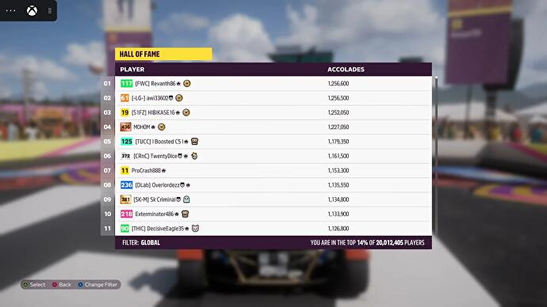

Microsoft confirma la emisión de un Showcase Extended el día 14 de junio
Noventa minutos con más tráilers, gameplays y entrevistas con desarrolladores.
Microsoft ha confirmado la emisión de un Showcase Extended el próximo día 14 de junio.
Esta ampliación del Xbox and Bethesda Showcase principal, que está previsto para dos días antes, el día 12 de junio, incluirá "nuevos tráiler, vistazos con mayor profundidad a las noticias del showcase principal y opiniones de creadores de juegos", según explica la compañía de Redmond.
El Showcase Extended tendrá subtítulos en castellano y una duración aproximada de noventa minutos. No se espera en él grandes anuncios, pero sí más detalles sobre lo presentado el domingo.
Pese a su reciente retraso, Starfield está llamado a ser uno de los grandes protagonistas del Showcase de Microsoft y Bethesda, en el que también debería haber información sobre el nuevo Forza Motorsport, The Outer Worlds 2, Redfall, Avowed y Fable, entre otros proyectos first-party de Microsoft.
ACERCA DEL AUTOR
Cosme fulanitoJose es fundador de Eurogamer España y el director de su línea editorial y de contenidos. Ama el punk-rock, el cine palomitero de Hollywood, los simuladores de submarinos, la sci-fi, los cacharros de Apple y la década de los 80. Puedes leerlo también en su Twitter o verlo en su canal de Twitch.
Ya está disponible la traducción al castellano de The Elder Scrolls: Online
Junto a la expansión High Isle
Hoy es el día de lanzamiento de The Elder Scrolls: High Isle, la nueva expansión de The Elder Scrolls Online centrada en los bretones y que nos ofrece toda una nueva área llena de misiones que descubrir. No obstante, para los jugadores hispanoparlantes este día de lanzamiento trae aparejada otra buena noticia más.
En la actualización gratuita para incorporar el contenido de la nueva expansión al juego se incluye una de las funcionalidades más pedidas por los fans: la traducción completa al castellano del juego. Es un parche de alrededor de 4GB que se descarga automáticamente al abrir el cliente de PC. En consolas, no estará disponible hasta dentro de unos días, el próximo 21 de junio. Podéis consultar todos los detalles en nuestra guía.
Por lo extensísimo del texto de este MMO, la traducción al castellano se había hecho esperar casi ocho años desde el lanzamiento original del juego. No obstante, a partir de ahora, podrá accederse a ella libremente.
High Isle, la nueva expansión, por otro lado, también está ya disponible para su descarga.
ACERCA DEL AUTOR
Cosme fulanitoJose es fundador de Eurogamer España y el director de su línea editorial y de contenidos. Ama el punk-rock, el cine palomitero de Hollywood, los simuladores de submarinos, la sci-fi, los cacharros de Apple y la década de los 80. Puedes leerlo también en su Twitter o verlo en su canal de Twitch.
Forza Horizon 5 ya ha superado los veinte millones de jugadores
A la espera de la primera expansión.
Forza Horizon 5 ya ha superado los veinte millones de jugadores.
Aunque el hito no ha sido anunciado por Playground Games, el marcador del Hall of Fame del propio juego - en el que se compara nuestra puntuación total con la de todos los demás jugadores - ya confirmaba un total de 20.012.405 jugadores esta misma mañana.
Forza Horizon 5 se ha convertido en la entrega más popular de la franquicia, impulsado por su inclusión en el catálogo de Xbox Game Pass y por ser uno de los títulos más atractivos para la consola de actual generación de Microsoft, Xbox Series X/S.
La compañía de Redmond ya lo calificó en su momento como "el mayor lanzamiento" en la historia de la saga Forza, contando con casi un millón de jugadores incluso antes de su lanzamiento oficial, gracias al acceso anticipado que ofrecía la Edición Premium. Esto significaba que, en términos de recaudación, el Early Access ya había amasado entre treinta y seis y setenta y nueve millones de dólares.
El éxito se mantuvo después, con más de diez millones de jugadores durante los siete primeros días (más de cinco veces los dos millones de jugadores que tuvo Forza Horizon 4 en su primera semana). Esto convirtió al juego de carreras en mundo abierto de Playground Games en "la mejor primera semana en la historia de Xbox".
De cara al futuro, se espera que Playground anuncie en breve la primera de las dos expansiones planeadas, seguramente en el showcase de Xbox que se emitirá este domingo. Cada una de estas expansiones "añadirá una nueva localización, más vehículos y nueva jugabilidad", según la descripción oficial.
ACERCA DEL AUTOR
Cosme fulanitoJose es fundador de Eurogamer España y el director de su línea editorial y de contenidos. Ama el punk-rock, el cine palomitero de Hollywood, los simuladores de submarinos, la sci-fi, los cacharros de Apple y la década de los 80. Puedes leerlo también en su Twitter o verlo en su canal de Twitch.